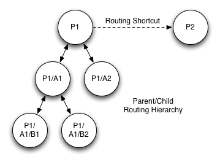
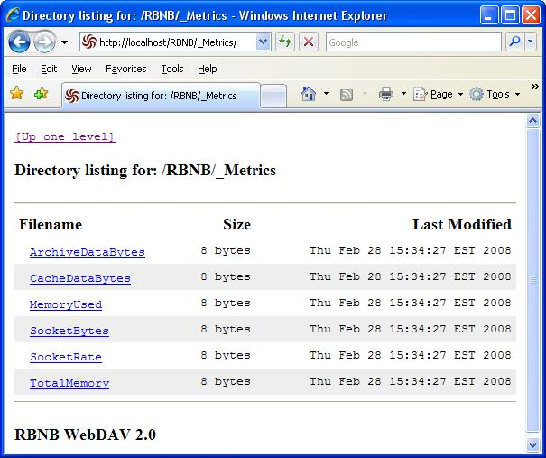
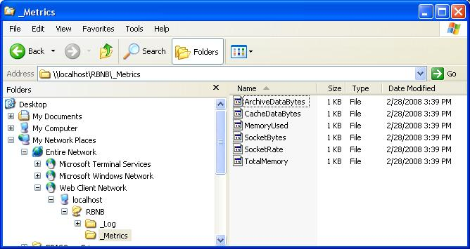

RBNB DataTurbine
Software Developer Guide
V3.0
February, 2008
Table of Contents
1
Introduction
1.1
Purpose
1.2 Object
Overview
1.3
Programming Environments
2 ChannelMaps
2.1
Channel Names
2.2
Channel DataTypes
2.3
Channel TimeStamps
2.4 ChannelMap
Registration
2.5
ChannelMap Methods
2.6 Channel Trees
3 Clients
3.1
Base Client
3.2 Source
Client
3.3 Sink Client
3.4 PlugIn
Client
4
Routing and Mirrors
5
WebTurbine
1
Introduction
This
is an update to the older V2 Developer Guide. It trims some
deprecated and obsolete material, updates and expands where things have
changed (e.g. ChannelTree,
PlugInTemplate),
and adds new sections for the WebTurbine
and Routing
capabilities. 1.
1 Purpose
This manual provides an overview of the RBNB Application
Programming Interface, for historical reasons known as the "Simple API"
(SAPI). The SAPI is designed to provide maximum capability with minimum
complexity. This document is not a complete reference for
all available SAPI methods. For a rigorous reference
document, see the associated Javadoc and
Doxygen documentation.
The SAPI is implemented as a set of methods on top of the RBNB
Java "RMap" or "Full" API, which is what the RBNB server itself is
written to. The full RMap API
is not supported for open access, but the SAPI is meant to be a highly
functional, self contained interface to the RBNB.
1.2
Object Overview
There are two main types of objects in the Simple API:
ChannelMap
Client
The ChannelMap object organizes data.
ChannelMaps are used by RBNB clients to send, request, and retrieve
data from an RBNB server.
A Client object can be one of the
following sub-classes:
Source
Sink
PlugIn
An RBNB software developer writes RBNB "clients". Clients
communicate with an RBNB server to send and retrieve data via ChannelMaps. A Source
client sends data to the RBNB Server. A Sink
fetches data from an RBNB Server. A PlugIn
receives requests (from the server on behalf of a Sink)
and responds with data (thus acting like both a Sink
and Source).
The
following figure illustrates how Source and Sink clients connect to an
RBNB server. Overall geometric scalability (MxN) is achieved
through a combination of linear (1xM and Nx1) internal objects.
RBNB Achieves Geometric
Scalability with Linear Internal Structures
Channel Map
All RBNB data is organized in "channel maps". RBNB clients
manipulate channel maps as a means to make requests (sinks) and
submit data (sources). A channel map consists of a collection
of channel objects, each with three main components:
| Name | Text name e.g. "myChannel" |
| Data | Binary data of various types |
| TimeStamp | Monotonically increasing floating point number |
A source client builds a channel map consisting of one or more
named channels. For each channel it provides data of a
specified type and quantity. It also specifies a
timestamp for the channel map as a whole, or for the various pieces
(channels and data) separately. After being so
built, the channel map is sent from the source client to the RBNB
server.
This process can be repeated, adding new channels or new data to
existing
channels.
A sink client builds a channel map in order to request
data. Here, the channel map consists of named channels and
timestamps, which is sent to the RBNB server as a request.
The response to this request is another channel map, this time with the
data filled in for the various channels.
A "channel tree" is an optional channel map accessory that
provides a hiearchical read-only view of a channel map.
Source Client
Source clients are "active", that is they initiate data transmittal to
the server. Each time a source sends some data to the server,
it is called a "frame". A source can send a sequence of
frames to the server. Each frame can consist of one or more
named "channels". Each channel can consist of one or more
data points per frame.
Key to the idea of RBNB is that all data has monotonically
increasing time-stamps. Timestamps can be per frame, per
channel, and/or per data point. Timestamps can be explicit
(provided by the source), or implicit (automatically provided by the
client API or RBNB server).
Sink Client
Sink clients are "active", that is they initiate data retrieval from
the server. Just as for a source, each time a sink gets
frames of data from a server. Each frame consists of one or
more named channels, with each channel consisting of one or more data
points.
A sink requests data by both channel name(s) and
timestamp. The data
returned to a sink can consist of multiple or partial source frames,
depending
upon the requested time slice. There are three modes by which
a sink
can get data from a server:
Request
Subscribe
Monitor
Requests are for a particular time interval, for which there is a
single response for each such request. It is also possible to
make a single request that is automatically repeated over a specified
number of time intervals.
Subscribe and Monitor modes are open-ended in that new data is
automatically sent (from the server to the sink client) as it becomes
available. Subscribe mode fetches all data, even if this
means falling behind real-time. Monitor mode skips data in
order to stay current.
PlugIn Client
PlugIn clients are "passive sources", that is
they appear to other clients as RBNB sources, but wait for data
requests before sending data to in response to those requests. PlugIns
implement both sink and source connections. The server passes to the
PlugIn
any requests for PlugIn channels to the PlugIn sink
connection.
Upon receipt of a request, a PlugIn
acts as a source and sends its response to the server, which forwards
it to the requesting sink.
A PlugIn optionally registers the specific channels it can
provide. Registered channels do not have any data in them, they are a
means of "advertising" available channels. With registered channels,
only requests for those specific channels will be forwarded by the
server to that PlugIn. Otherwise, any request
(e.g. "Plugin/anychan") is forwarded to the PlugIn, which can invent
channels on-the-fly.
Thus, a PlugIn can provide "services" that can involve
fetching and processing other RBNB data on the demand of third party
applications. PlugIns
can process data from other PlugIns, thus cascading sequences of
processing
steps.
1.3
Programming Environments
Whereas
earlier versions of the RBNB flirted with supporting various
programming languages and environments, the latest version is focused
on Java as the primary programmer API-level interface. Other
environments remain supported via various higher-level
layers,
such as via HTTP using the WebTurbine interface. There is
also a
lurking MS dot-Net interface via J# in a Java-compatable mode.
Java
The RBNB server and its API are themselves developed using 100% pure
Java. Thus, the core API and its documentation is Java based.
MATLAB
With Version 6 and later of Matlab, direct calls to Java are supported
from the command line mode of Matlab. Thus, Matlab uses the
native Java
RBNB API directly. Several simple utility M-files are
provided as examples.
In order to access the RBNB API from Matlab, you must edit the
Matlab classpath.txt
file to include the rbnb.jar file.
RBNB
also works via the Matlab-compatable COMSOL script environment.
To enable this, one must setup the COMSOL
"javaDeclare" and
MANIFEST.MF files.
2
ChannelMap
Clients manipulate data via a "ChannelMap" object. A ChannelMap is
comprised of one or more RBNB channels, each consisting of a name,
timestamp, and (optional)
data.
Channels are individually identified and "staged" using the ChannelMap.Add method prior
to being transferred (Fetch
or Flush).
Behind the scenes, the SAPI incrementally builds up and maintains the
underlying "RMap" data structures.
2.1
Channel Names
Multi-tiered hierarchical channel structures can be created, requested,
and referenced through a simple directory-like naming
convention. A fully specified channel name consists of three
main parts:
Server/Source/Channel
Where:
Server:
serverName assigned at Server startup (command line argument)
Source: clientName given by
Source via OpenRBNBConnection method
Channel: channelName given by Source
via ChannelMap.Add method
Data Sources define channels (ChannelMap.Add)
with the Server and Source parts implied. The channel name part may
itself be multi-tiered, such as:
Chan0
Test43/C0
Test43/C1
A/B/C
Data Sinks request channels (ChannelMap.Add)
using either relative or absolute (full-path) names. For example:
/Server/MySource/Test43/C2
# absolute path
MySource/Test43/C2
# relative path
Absolute paths start with a slash, and include the top level (parent)
server all the way down to the channel name(s). Relative
paths do
not start with a slash, and begin with a Source name on the local
server.
For Sinks, and when requesting a list of available Server
channels, wildcards can also be used, as in:
MySource/Test/...
*/c0
/Server/*/_Msg/...
The following Table summarizes the wildcard syntax available to the ChannelMap.Add (Sink-only)
and Sink.RequestRegistration
methods.
| Match String |
Description |
| "*" |
All objects (servers/sources/channels) at this level
(one deep) |
| "..." |
All channels this level and down (recursive
depth). Must be last part of multi-tiered name. |
SAPI Channel Naming Wildcard Notation
2.2
Channel DataTypes
ChannelMap Data (PutData)
can be specified as a particular primitive data type, per the following
table.
| DataType
Code |
Description |
| TYPE_FLOAT32 |
Single precision (32 bit) floating point number |
| TYPE_FLOAT64 |
Double precision (64 bit) floating point number |
| TYPE_INT8 |
8-bit integer (byte) |
| TYPE_INT16 |
16-bit integer (short int) |
| TYPE_INT32 |
32-bit integer (int) |
| TYPE_INT64 |
64-bit integer (long) |
| TYPE_STRING |
Variable length String (character array) object |
| TYPE_UNKNOWN |
Unknown or unspecified (byte array) |
| TYPE_BYTEARRAY |
Array of arrays of bytes (byte[][]) |
| TYPE_USER |
User metadata |
SAPI DataType Codes
When specifying a primitive DataType with a word length
greater than 8 bits (1 byte), the word order (MSB,LSB) is automatically
set to match that of the local native CPU upon which the Source
application runs.
2.3
Channel TimeStamps
A Source sets the timestamp for subsequent data transmittal using
either a manual (PutTime)
or automatic (PutTimeAuto)
method. A timestamp is a monotonically-increasing double-precision number that defines
"when" the data occurred. The
simplest form of timestamp would be to simply count by whole-numbers,
e.g. t=0,1,2,3,...
Default (automatic) timestamp are floating-point number of
seconds since 1970, re native Java time or Unix time. For
compatability with other applications, it is suggested (but not
required) that you adhere to this time-stamping convention.
Each manual timestamp applies to the data specified by one or
more subsequent calls to PutData,
until a time-setting method is called again. Thus, you can
choose to timestamp data point by point, channel by channel, or frame
by frame depending on how you interleave your calls to PutTime and
PutData.
Automatic time stamps are updated once upon each data Flush. Thus,
automatic timestamps are always frame by frame.
Note that RBNB timestamps must monotonically increase. Thus,
if you are manually providing timestamps, be sure to never decrease the start time call-to-call.
2.4
ChannelMap Registration
When a Source puts ChannelMaps to a server, the channels are
automatically registered. See Sink.RequestRegistration
for how to get the ChannelMap from which a list of channel strings may
be obtained.
A Source or PlugIn can also specifically register its channels, and in
so doing add "metadata" (descriptive information) about the
channels. That
is, the datablock in the registration ChannelMap is descriptive
meta-data about the corresponding Source channel. Since the
registration information is not part of the ring-buffer, this meta-data
is static (i.e. does not
change with time, nor does it "drop off" the ring buffer).
2.5
ChannelMap Methods
2.5.1
Construction
The following ChannelMap methods build, edit and access the list of
channels.
int
Add(String channelName)
Each call to ChannelMap.Add builds up the list of channels to be either
sent or fetched by the Source or Sink, respectively.
ChannelMap.Add returns an index that increments with the number of
channels added. For Sources, this index can be used as the
reference index for use in the PutData method. It is safe to
presume this index starts at 0 and increments by 1 each call to Add with a new or cleared ChannelMap.
For Sinks, it
is possible to get more or less channels than you specify (e.g. using
wildcards), so you must inquire (with GetName or GetIndex) which
channels have been Fetched.
void
Clear()
This method clears out the channel map built by the ChannelMap.Add method, and
frees associated memory. Use it when you want to build a new
channel map from a "clean slate".
2.5.2
Putting Data and Timestamps
The following methods put data in a ChannelMap. These are
generally used by Data Sources (and PlugIns).
Note that putting data into a ChannelMap does not send the
data to an RBNB
server, it builds a local ChannelMap. After building the
ChannelMap, it is sent from the client to the RBNB server via the Source.Flush method.
void
PutData(int chanIndex, byte[] rawData, int typeID)
The generic PutData method sets the data to be sent as a byte-array
plus an associated typeID. The typeID
is one of the DataTypeCodes.
Use the channel index
from the associated ChannelMap.Add
method, or use
the GetIndex
method.
Note: Mixing
different DataTypes in a single channel is not supported, and may cause
difficulties for Sink applications that try
to extract mixed-type data.
void
PutDataAsXXX(int chanIndex, XXX[] data)
The family of PutDataAsXXX methods specifies the primitive type of the
supplied data array, where XXX corresponds to one of the DataType Codes.
For example, PutDataAsFloat32 lets you directly send a floating point
data array with no need to first
convert it to a byte array. (Overloaded methods are not used to enhance
portability of the SAPI).
Note:
PutDataAsString puts a single String object,
which is considered to be an indivisible data word.
void
PutTime(int chanIndex, double start, double duration)
void
PutTimes(double[] times)
void
PutTimeAuto(String timeMode)
void
PutTimeRef(ChannelMap
sourceMap, int channelIndex)
These methods establish the time-stamping method for the
ChannelMap. All PutData calls following a PutTime call will
be timestamped accordingly. For example, you can call PutTime
once for the whole ChannelMap, in which case all data for all channels
share a common timestamp. Or you can PutTime separately
before every PutData call, giving unique timestamps to every data point
for every channel.
2.5.3
Getting Data and Timestamps
The following methods access the data in a ChannelMap. These are
generally used by Data Sinks (and PlugIns).
Note that getting data from a ChannelMap does not fetch it
from the RBNB server, it extracts it from a local ChannelMap.
Prior to getting data, the ChannelMap is sent from the RBNB server to
the client via the Sink.Fetch
method.
byte[] GetData(int chanIndex)
This generic extract data method gets data as a byte-array from the
ChannelMap.
XXX[]
GetDataAsXXX(int chanIndex)
The family of ChannelAsXXX methods specifies the primitive data type of
the returned data array, where XXX corresponds to one of the DataType Codes.
For example, GetDataAsFloat32 lets you retrieve a floating point data
array with no need to convert it
from a byte array. If the fetched data does not match the
type, an
exception will be thrown. You can check the type using the
ChannelType
method.
Note:
GetDataAsString gets an array of String
objects, where each String is considered to be an
indivisible, individually
time-stamped, variable-length data word.
double[]
GetTimes(chanIndex)
This method returns an array of double precision RBNB time values for
the specified channel index. There will be one time point per data
point.If
necessary, the point times will be linearly interpolated from the
underlying start time and duration of the corresponding data
array. See PutTime.
2.5.4
DataType
Info
These methods provide information about the datatype of a channel.
int
GetType(int chanIndex)
This method returns a DataType
Code for the primitive data type of the fetched data for a
given channel. It can be used to determine which of the
GetDataAsXXX methods to call.
int
TypeID(String type)
String
TypeName(int typeID)
These methods convert the datatype string to numerical constant, and
vice versa.
There are several methods to let you inspect and get the names of the
channels in a ChannelMap object. The methods are:
String
GetName(int index)
String[]
GetChannelList()
These
utility methods provide means to get the channel name(s) for a
given ChannelMap. For Sinks, you can use this method to discover which
channels were successfully Fetched.
int
GetIndex(String channelName)
This utility method provides a means to get the channel index
given the channelName. For Sources, the
return value of ChannelMap.Add
is a reliable channel index. For Sinks, you may need to use
this method to determine the reference index of Fetched
channels.
2.6
Channel Trees
The ChannelTree class provides per-node channel hierarchy
construction and identification methods. It replaces the
deprecated ChannelList and NodeList methods. It is a
client-side
layer that provides read-only access to the underlying ChannelMap
object.
The ChannelTree has Controller,
Server, Source, Plugin, Sink, Folder, Channel, and Empty nodes.
These correspond to logical filesystem-like entities rather
than a direct correspondence to the ChannelMap object.
ChannelTree
createFromChannelMap(ChannelMap cmap)
Creates a new read-only view of the provided channel map.
See the SAPI Javadoc
for additional ChannelTree methods.
3
Clients
Clients manipulate ChannelMaps to send and receive
data from an RBNB server.
3.1
Base Client
The Client class is the base class of all simple
clients (Source, Sink, PlugIn)
to RBNB servers. The base Client class
encapsulates functionality common to all clients.
3.1.1
Client Connections
Clients have methods to open and close connections between the client
application and an RBNB server.
void
OpenRBNBConnection(String
serverAddress, String clientName, String userName, String password)
To open a connection identify the server (serverAddress),
and identify the client (clientName).
The clientName is
used for display in applications such as rbnbAdmin,
and provides a
handle for other applications to administer and access data from this
client.
Clients optionally provide a userName
and password as part of the connection
process. If these are defaulted to NULL, there will be no
user name by which you can be granted access to restricted data.
Note: userName
and password
authorization has limited utility and is only implemented by some
clients. The subject of RBNB data access authorization is the
subject of other documents.
void
CloseRBNBConnection()
Close the connection with the server, and free up associated resources.
The related Source.Detach method disconnects while leaving data intact.
3.1.2
Get
Server Info
It is possible to get a the name of the connected server, and
of yourself (the connected client).
String[]
GetServerName()
String[]
GetClientName()
These methods return the name of the local RBNB server, and the name of
the connected client application, respectively.
3.1.3
Ring Buffer Properties
SetRingBuffer
(int cacheSize, String archiveMode, int archiveSize)
Clients can set the size of the RBNB server ring buffer associated with
its data. Normally, this only applies to Source
clients.
The cacheSize and archiveSize
parameters specify the sizes of the RAM and disk ring buffers (in
frames), respectively. Each
call to "Flush" by a Source constitutes one "frame".
The archiveMode parameter has one of the
following values:
"none" - No archive is to be used
(default)
"load" - Load
the archive that
matches this application clientName
"create" - Create
a new archive, delete an
existing one if one is present
"append" - Add to
an existing archive, create a new one if necessary
3.2
Source Client
An RBNB data source sends data to and RBNB server. A data Source client
has the following tasks, which may be repeated as desired:
Define a ChannelMap
Set TimeStamp(s)
Specify data for channel(s)
Flush data to RBNB server
3.2.1
Define Channel Map
A Source channel map is defined by calls to the ChannelMap.Add
method. This associates
channel names with channel indices, which in turn are used for
efficient,
potentially repeated references in the ChannelMap.PutData
method.
3.2.2
Time Stamps
ChannelMap timestamps are specified using the ChannelMap.PutTime
method(s).
3.2.3
Specify Channel Data
The PutData methods specify the channel data to
send at the next call to the Flush
method. These methods reference the channels by the index
returned by ChannelMap.Add.
They provide data either as a generic byte-array or as a particular
data type.
PutData may be called multiple times per channel per Flush,
building up a many-point-per-channel data frame in a piecemeal manner
as may be convenient to the application. The SAPI has
internal logic which automatically consolidates and organizes data into
efficient channel map structures. It will always be more
effective to handle fewer, larger data buffers, however.
3.2.4
Flush Data
Once things are set up, send the data to the server.
int
Source.Flush(ChannelMap cmap, boolean blockingIO)
After staging information with the time and data setting methods (i.e. PutTime and PutData), the specified
channel map is sent as a consolidated RMap with the Flush method.
Each call to Flush involves round-trip network communication,
therefore staging larger data frames (with larger buffers and/or
multiple calls to PutData) prior to flushing them may provide a
significant performance advantage. Of course, you need to also consider
the associated impact on memory use and
latency when deciding how often to Flush your data.
If the blockingIO parameter is true,
it will block until the data is sent. If there is no data to
send, calling Flush(cmap,true) will synchronize
your application with the server. It returns the
number of channels sent.
Note: Flushing the
channel map clears the data. Thus, only new data (via
PutData) since the previous call to Flush are sent each time.
3.2.5
Source Example Code
The following code opens a connection to a local RBNB server and sends
a message string to it. The timestamp
defaults to time-of-day in lieu of using the PutTime method.
// RBNB Developer Guide Simple Source
Example
import com.rbnb.sapi.*;
class simpleSource
{
public static void main(String[] arg)
throws Exception
{
Source
mySource = new Source();
ChannelMap cmap = new ChannelMap();
mySource.OpenRBNBConnection("localhost",
"mySource");
cmap.Add("myChan");
cmap.PutDataAsString(0, "Hello World!");
mySource.Flush(cmap, true);
Thread.sleep(5000);
// sleep to
let data be viewed
mySource.CloseRBNBConnection();
//
data goes poof on close
}
}
|
Simple
Source Example Code
The following code is a more complex example, showing how to
write sequential data frames for multiple channels in a loop with
simply-indexed timestamps.
//
RBNB Developer Guide Looping Source Example
import
com.rbnb.sapi.*;
class
loopSource
{
public static void main(String[] arg) throws Exception
{
int nchan = 3, nframe = 10;
Source mySource = new Source();
ChannelMap cmap = new ChannelMap();
for(int i
= 0; i < nchan; ++i) cmap.Add("C"+i);
mySource.OpenRBNBConnection("localhost",
"mySource");
for (int
j = 0; j < nframe; ++j) {
for (int i = 0; i < nchan; ++i) {
cmap.PutTime((double)i, 0.);
cmap.PutDataAsString(i, "Data for Channel C" + i);
mySource.Flush(cmap, true);
}
}
mySource.Detach();
// data remains after Detach
}
}
|
Looping Source Example
Code
3.3
Sink Client
An RBNB data sink fetches data from and RBNB server. A sink client has
the following tasks, repeated as desired:
Specify request ChannelMap
Select sink mode
Fetch response ChannelMap
Extract data and time from response ChannelMap
3.3.1
Request ChannelMap
A Sink clients formulates a request ChannelMap that defines the names
and timestamps of the data to be fetched. Channel names are
defined
by calls to the ChannelMap.Add
method, and
the associated channel times are defined by calls to the ChannelMap.PutTime
method(s).
3.3.2
Sink Modes
There are three types of sink data fetch modes:
- Subscribe - All new data is to be
streamed without gaps
- Monitor - "Current"
up-to-date live information is to be sent best-effort.
- Request - A
particular time-slice of data is requested
Each sink fetch mode applies to the group of channels specified by the
ChannelMap.
void
Subscribe(ChannelMap cmap)
This is the simplest data fetch mode. It takes a channel map
as
an argument and returns no value. It initiates a streaming
"push"
of data (from server to client) for all specified channels starting at
the
time of this call, and proceeding into the future. A single
call to
Subscribe can be followed by repeated calls to Fetch, where the next
frame
of data is received. Note that the frame size is determined
by the
source application(s).
Subscribe is the most efficient mode in that data frames are
streamed from
the server without waiting for acknowledgment from the sink
client. If the client does not keep up, the data delivered
will fall further and further behind until it falls off the beginning
(oldest) data in the source ring buffer, at which point the stream
aborts.
void
Monitor(ChannelMap cmap, int gapControl)
This provides a variation on the subscribe mode. It initiates
a
stream of "current" data that will skip-forward as necessary to stay up
to date. Full source frames are returned each Fetch. The gapControl
argument specifies how many frames behind it can get before it will
jump
ahead (and miss data) in order to stay current.
When Monitor mode keeps up, it is much like Subscribe, except
that there is more round-trip traffic between the client and server for
Monitor mode (to establish the gapControl
criterion). Unlike Subscribe mode, the stream will not abort
if the client doesn't keep up; but data can be dropped with resulting
gaps.
Note: As of
the current release, the gapcontrol logic is (still) not fully
implemented.
void
Request(ChannelMap cmap, double
start, double duration, String timeRef)
The basic Request mode asks for a time-slice of data beginning at start
and running for a duration amount. The timeRef
argument specifies the time-reference for start.
The following
table summarizes the most commonly used timeRef
options. See the Javadoc for a complete reference.
| timeRef |
Description |
| "absolute" |
Request a duration amount of data
at a start time specified in
absolute-seconds
from midnight, Jan 1st, 1970 UTC.
The data retrieved will be that which has time
in the interval: start
<= time
< (start+duration) |
| "oldest" |
Request a duration amount of data
where start is relative to the
oldest available
data (beginning of ring-buffer).
With a zero start-time,
it retrieves the oldest duration
of data. In general, the data retrieved will be that which
has time
in the interval: (oldest+start)
<= time < (oldest + start
+ duration)
|
"newest"
|
Request a duration
amount of most recent
data (end of ring-buffer). With a zero start-time,
it retrieves the newest duration
of data. In general, the data retrieved will be that which
has time
in the interval: (newest-duration-start)
< time <= (newest-start)
|
Additional timeRef
options include "aligned", "after", "modified", "next", "previous".
These enable sequences of relative requests moving back and
forth
in time without overlapping data. Refer to the
SAPI
Javadoc for detailed description of these advanced options.
Note that both start
and duration
are always positive numbers.
For "absolute" and "oldest" time-references, duration
extends to right (future)
of the start
point. For
all the other (e.g. "newest") time-references, duration extends
to the left (prior)
of the start
point. For example, to get the most recent data, use a start of zero:
sink.Request(cmap,
0, 1, "newest")
There is always one Fetch'd channel map
returned for each Request, even if this is a NULL
map for the cases where there is no data. A
NULL map
can occur for the "after"
or "modified" cases, or when there is simply no data at the requested
time.
A duration
of zero (0.) is a special case. It retrieves a single point
(frame) of data at-or-before the specified time.
Note that a non-zero duration
can specify an interval that is in-between other data, thus returning
an empty ChannelMap.
void
RequestRegistration(ChannelMap cmap)
Sends a request to the server for the current registration map for the
channels in the specified cmap. The channel map retrieved via
the followup Fetch
call can be inspected
using the GetChannelList
method to get a list of channels and other server objects (sources,
sinks). The Registration channel map will contain any source-provided
metadata.
3.3.3
Fetch Response
After building the ChannelMap and setting the Sink Mode (in that
order), get the RBNB data using the Fetch method.
ChannelMap
Fetch(boolean blockingIO)
This method reads the data from the RBNB server for all channels in the
current local Channel List (built by ChannelMap.Add).
It returns the number of channels retrieved.
If the blockingIO parameter is true,
it will block until the data is retrieved. Otherwise, it will
either return a positive integer indicating data was ready and has been
read, or a zero (0) indicating no data was yet available.
3.3.4
Extract Data
Fetched data is stored the ChannelMap returned by Fetch.
Access
to the data and time is via the associated ChannelMap.Get
methods.
3.3.5
Sink Example Code
The following code will fetch the message sent to the local
RBNB Server by the earlier Data-Source
example.
//
RBNB Developer Guide Simple Sink Example
import
com.rbnb.sapi.*;
class
simpleSink
{
public static void main(String[] arg) throws Exception
{
Sink mySink = new Sink();
mySink.OpenRBNBConnection("localhost", "mySink");
ChannelMap reqmap = new ChannelMap();
reqmap.Add("mySource/myChan");
mySink.Request(reqmap, 0., 0., "newest");
// get most recent data
ChannelMap getmap = mySink.Fetch(1000);
System.out.println(getmap.GetName(0)+": "+getmap.GetDataAsString(0)[0]);
mySink.CloseRBNBConnection();
}
}
|
Sink
Example Code
3.4
PlugIn Client
An RBNB PlugIn is a special client that connects as a combination
source/sink. When a third-party sink requests a channel from the
PlugIn, this request (via a ChannelMap object) is sent from the RBNB
server to that PlugIn. The PlugIn fills in the answer (puts data) into
this request map and returns it,
thus dynamically responding to data requests.
A PlugIn client shares the Fetch
and Flush methods from
the Sink and Source classes, respectively.
void
PlugIn.Register(ChannelMap cmap)
A PlugIn may (optionally) register the channels that it can
provide.
These channels become part of the ChannelList for the PlugIn, i.e. they
are a means of "advertising" available channels.. Data
contained in
Registered channels are considered metadata.
If any channels are registered by a
PlugIn, only requests for those specific channels
will be forwarded by the server to that PlugIn. If no
channels are registered by a PlugIn, then any
requests to that PlugIn (e.g. "Plugin/anychan") will be forwarded to
the PlugIn, that
must look at the channel name(s) and decided what to do.
3.4.1
PlugInChannelMap
A PlugInChannelMap is a dual-purpose object. It is fetched to determine
a request, and filled in with data to be returned as a
response. It is required that the response ChannelMap is the
same object as the fetched (request) ChannelMap, as this ties the
response to the request.
PlugIns extend regular ChannelMaps to add a few methods unique
to their needs.
double GetRequestStart()
double GetRequestDuration()
The request start and duration indicate the time-slice to be
processed. By default, these values constitute the
start/duration of the response. That is, there is no need to
call PutTime on
the response map unless the response map time is different than the
request map.
String GetRequestReference()
This method returns the type of request being made. The following
correspond to the timeRef argument of the corresponding Sink.Request call:
"newest", "oldest", "absolute", "modified",
"after"
The following correspond to Sink.Subscribe
and Sink.Monitor data
requests, respectively:
"subscribe", "monitor"
Note:
"subscribe" and "monitor" modes are not supported for PlugIns, but are
implemented for Plugin
Templates.
3.4.2
PlugIn Example Code
The following PlugIn code echos the name of the requested channel in
response
to any request.
// RBNB Developer Guide Simple PlugIn Example
import com.rbnb.sapi.*;
class simplePlugIn
{
public static void main(String[] arg)
throws Exception
{
PlugIn
myPlugIn = new PlugIn();
myPlugIn.OpenRBNBConnection("localhost", "myPlugIn");
while(true)
{
// run
until killed
PlugInChannelMap cmap =
myPlugIn.Fetch(1000);
for (int i = 0; i <
cmap.NumberOfChannels(); i++) {
String
response = new String("Got request for: "+cmap.GetName(i));
cmap.PutDataAsString(i, response);
}
myPlugIn.Flush(cmap);
}
}
} |
PlugIn
Example Code
3.4.3
Plugin Template
The
PlugInTemplate class is an abstract base class that simplifies PlugIn
development. It automatically provides data-streaming (i.e.
subscribe and monitor) support by converting such streams to a sequence
of requests that the plugin template developer can handle one-by-one.
void processRequest(ChannelMap fwdData,
PlugInChannelMap out)
Most plugin implemenations will only need to overload this method in
order to have a fully functional plugin.
When
a sink requests data from this plugin with follow-on reference to other
RBNB data, this data is automatically provided via the fwdData parameter.
The method returns its results via the out parameter.
The following simple example echoes the name of
the requested channel.
//
RBNB Developer Guide Simple PlugIn Template Example
import
com.rbnb.sapi.*;
class
simplePlugInTemplate extends com.rbnb.plugins.PlugInTemplate
{
public simplePlugInTemplate()
{}
protected void processRequest
(ChannelMap fwdData, PlugInChannelMap
picm) throws SAPIException
{
// only process first channel
picm.PutDataAsString(0, "Got request to
process: "+fwdData.GetName(0));
return;
}
public static void main(String[] arg) throws Exception
{
simplePlugInTemplate myPlugInTemplate =
new simplePlugInTemplate();
myPlugInTemplate.start();
}
} |
PlugIn Template Example Code
4
Routing and Mirrors
RBNB servers can communicate with
each other
directly to form connected networks of servers. The two main
forms of inter-RBNB communication are Routing and Mirrors.
4.1 Mirrors
Mirrors "push" data from one data Source to
destination, making a copy of the Source on another RBNB server. Thus
with a mirror, a copy
of the data is automatically sent from the origin-source to the destination-mirror as it arrives.
There are a two kinds of mirrors: a "From" mirror and a
"To" mirror. The difference is the side from which the connection is
established; after which the data is pushed from source to sink the
same as any
other mirror.
4.2 Routing
Whereas Mirrors connect one Source to another, Routes connect entire servers. Routes or routing "pull" data. Thus
with a route, only the registration
(channel metadata) is supplied a priori from source to sink; the data
is
fetched (over and over again) on-demand.
There are various forms of routing. Two types of routing are
built into the RBNB
server: parent/child
and shortcuts.

RBNB Routing: Parent/Child
and Shortcuts
4.2.1 Parent/Child Routes
Parent/child routes RBNB form a
rigid hierarchy with only
one "top" parent RBNB. An
RBNB server has only one opportunity to establish its parent server at
startup. Parent/child
routes are always
bidirectional; i.e. a parent can see and fetch data from its children
and
grandchildren, and a child can see and fetch data from its (single)
parent, grandparents,
cousins, etc.
4.2.2 Shortcuts
Shortcuts are on-the-fly routes
that can be established
(and terminated) after RBNB servers are running.
They behave and function much like
parent/child routes after they are established, i.e. data is pulled
on-demand
across them. Shortcuts
form no rigid
hierarchy - this makes them flexible but lack the simple rules that
parent/child routes can use to find data.
Shortcuts are also inherently one-way connections.
4.2.3 Routing via Plugins
Finally, it is possible to
implement routes (and to a
lesser extent mirrors) via clients such as plugins. The
"robust routing plugin" provided with the RBNB distribution is just one implementation of a routing plugin that tries
to be
more robust in that it will carefully watch for network disconnects and
automatically try to reconnect.
5 WebTurbine
5.1
WebTurbine Introduction
The WebTurbine interface is tied to the Apache Tomcat web server.
It provides a layer that makes an RBNB server appear to be an
HTTP web server. There exists URL syntax for putting and
getting
RBNB channels (one at a time).
5.1.1
WebDAV
WebDAV is an extension to the ubiquitous HTTP protocol.
WebDAV stands for “Web Document Authoring and
Versioning.” With traditional HTTP, a Web server is a read-only device. WebDAV adds protocol
commands enabling a
client to write content to a Web server, with mechanisms to lock files
while
they are being accessed/edited. With
this write-capability, a WebDAV server becomes a full-featured network
file
server. Its
advantage versus other
approaches is its use of the existing Web infrastructure and the widely
supported HTTP protocol.
5.1.2 WebDAV
Enabled RBNB
The RBNB “WebTurbine” adds a web-server layer between the
RBNB server and client applications.
Specifically, it is a “servlet” that runs under the Apache
Tomcat web
server.
The popular open-source Apache Tomcat (Java) Web server
includes a fully featured WebDAV interface that connects to
an RBNB server instead of the traditional local file-set. RBNB
data channels can be HTTP URLs and network-mounted WebDAV
“files”. Each
root-level directory is an RBNB data
source, and each “file” below this source is an RBNB channel. This provides a web URL
and file-folder
interface to the entire contents of the RBNB.
5.1.3 URL
Syntax
In the tradition of the Web, from a browser or other HTTP
application, access to RBNB data channels is via URL of the
form:
http://rbnb-host:port/RBNB/rbnb-server/source/channel
Seen
as Web objects or files, URLs
to RBNB data channels by default reference the most-recent data point
of a
streaming time-sequence. A “point” is an indivisible data
word. For example,
it may be an image, a file, or
one floating point number from a signal stream.
To specify a range of data points over a time interval,
you can use a
URL “munge” syntax as follows:
- mydata?d=10
- video.jpg?t=360&d=0.2
- chatmsg?t=600&r=newest
In the above examples, “t”
refers to time-stamp, “d”
to duration of the time-slice, and “r”
is an optional reference to oldest or newest time (versus absolute). Concatenate
multiple references with the “&” symbol.
Note that although URLs are typically
used to get or read
data, it is also possible to PUT or POST content to a web server via
URL. The RBNB web
interface is fully
bi-directional. Munging
the timestamp on
a write specifies the time of the data being written.
By default, data writes are automatically
time-stamped with current time-of-day.
A complete reference to the WebDAV
options is bundled with the RBNB DataTurbine software release.
5.1.4 Interface
Options
There are several ways in which applications can access the
WebDAV-enabled WebTurbine system:
- Web
URL
- File
System
- Programmer
Each of these goes through the
rbnbDAV server, using the
HTTP/WebDAV protocol. These are each described in turn in the following
sections.
5.2
Web URL Access
Launched as a Web server “servlet,” all RBNB content may be
accessed via URL references. For example,
through a link such as http://localhost/RBNB,
you may peruse
live current content via your browser or any other application that can
open
Web URLs.

WebTurbine
Browser Interface
The
RBNB Web interface operates as
a WebDAV server, so you can even write
content to the RBNB using this means.
Many applications (such as Microsoft Office) are “WebDAV
enabled,” and
it is easy to write custom applications that use this bidirectional
read/write
interface.
Once
you have launched the
WebTurbine and RBNB servers, you can point your browser at the
WebTurbine
servlet-root at “/RBNB” below your Web server home URL.
For example, if you are running the Tomcat
web server at localhost:8080,
and an RBNB server with name Server,
the URL to the root directory to the RBNB data channels would be:
http://localhost:8080/RBNB
Below this point appears what looks
like a file system
consisting of the various RBNB data sources and channels. If you have routed RBNB
servers together, you
can continue down this hierarchy to access content from remotely routed
RBNBs.
5.3 File
System Access
RBNB file system
mapping is
accomplished via built-in WebDAV support in Windows XP, Mac OS X,
Mandrake
Linux, and several other systems and third
party packages. Many
WebDAV file system
clients provide full access to any application that can read and write
files.
5.3.1 File
Explorer Interface
The
RBNB server can be mapped as a
network drive, giving you a familiar file-folder interface to RBNB
dynamic data
files. An easy way
to do this is as a
WebFolder via Microsoft Internet Explorer.
Simply Open...
under the IE File
menu, enter the RBNB server
site (e.g., http://localhost/RBNB), and check the Open as WebFolder box. The resulting folder
window lets you browse
and read content across a network of routed RBNB servers.

WebTurbine File Explorer
Interface
Windows
also (sometimes) works using the "Map Network Drive" feature pointing
to the WebTurbine servlet URL, e.g. http://localhost/RBNB. Other
operating systems also provide WebDAV file-system support. On the
Mac OS X, use the top-panel Go/Connect to Server interface. On
Linux, use the "dav2fs" utility.
5.3.2 Shell
Interface
This syntax can be used by shell
commands, as part of Web
URLs, and in any programming language that supports simple file I/O. The following illustrates
RBNB dynamic file
access via Unix shell commands:
$ cd
/mnt/RBNB/rbnbSource
%
change to rbnbDAV source folder
$
cp c0 /usr/mjm/mycopy
%
grab most recent data (default)
$
cat c0@t=4&d=1
%
type data at time=4, duration=1
$
cd /mnt/RBNB
%
change to rbnbDAV server root folder
$
mkdir myStuff
%
create a new RBNB source (RBO)
$
cp /usr/mjm/foo myStuff
%
put data channel “foo” (at default TOD)
$ echo “hi” >
myStuff/c0@t=47 % put message in at time=47
Equivalent functions are available
from other operating
systems, such as the Windows command prompt.
Note that the '@' symbol is an optional substitute for the '?' munge character; this helps when '?' is a shell wildcard.
5.3.3 File
I/O Interface
Any software program can access RBNB
data as if it were a
file. The following
“C” code is a simple
example of an RBNB data source. Note
that no RBNB-specific API or libraries are used.
All that is necessary is for the “rbnbDAV”
server to be mounted as a local file system using standard OS-vendor
utilities
or open-source libraries.
// Simple
“C” Example of RBNB Data Source using rbnbDAV
#include
<stdio.h>
main()
{
char dbuf[256];
FILE *fp =
fopen(“myChan@t=3”,“w”);
// open channel
printf(“Enter:”);
fgets(dbuf, 256, stdin);
// get user message
fwrite(dbuf, 1,
strlen(dbuf), fp);
// write it to RBNB
}
|
An
RBNB data sink to read this
source (located far away across a network of servers) could simply open
this
same “file” for read access.
5.4 Programmer
Interface
It is possible to write programs which open,
read, and write via HTTP connections. With this
approach, it is possible to use the Web interface
in lieu of the standard RBNB Java API libraries for programmatic access
to RBNB
data. This has
several advantages:
- It
requires no special RBNB libraries or code at
the client side
- It
is arguably simpler than the standard RBNB
Java API
- It
is portable to programming languages other
than Java
For the Java programmer, this
approach has the
disadvantages:
- Somewhat
restricted supported features (e.g. no
subscribe-mode, one channel at a time)
- It
requires a WebTurbine/WebDAV server to be
running
- Performance
is less optimal due to the
additional data-hop and software layer
The syntax for how to program HTTP I/O is beyond the scope of
this document.